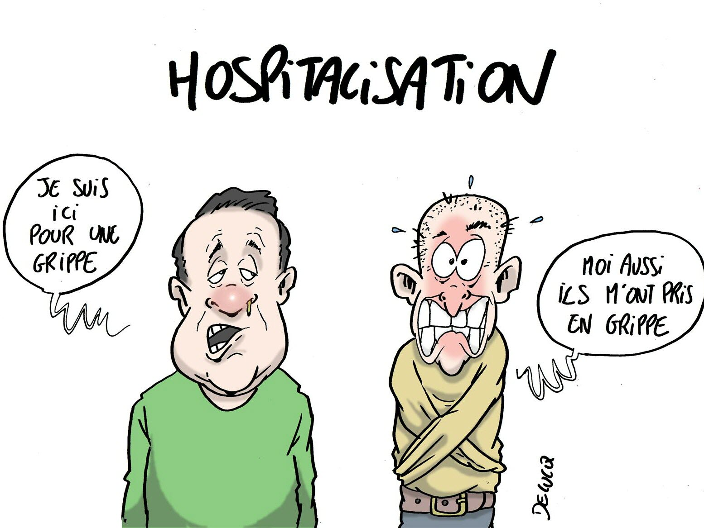

A propos de nous
Les sites de voyages sont des plateformes en ligne permettant de planifier, réserver et organiser des séjours en fonction des préférences et du budget des voyageurs. Ils offrent divers services comme la réservation de vols, d’hôtels, d’activités, de locations de voiture et même de conseils sur les destinations.
Hospitalisation
L’hospitalisation en voyage peut être une situation stressante, mais il est important d’être bien préparé pour y faire face efficacement. Voici un guide complet sur les précautions à prendre, les démarches à suivre et les solutions disponibles en cas d’urgence médicale à l’étranger.